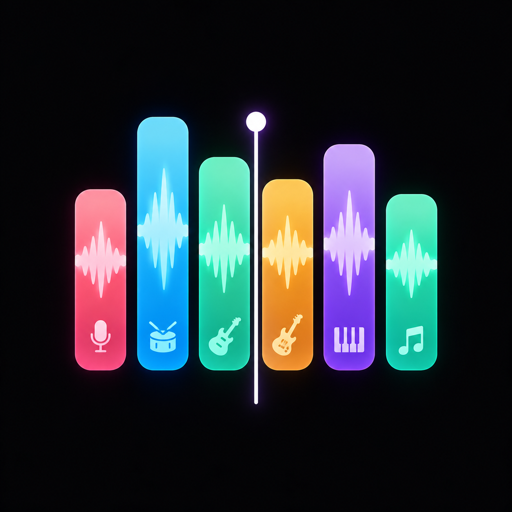
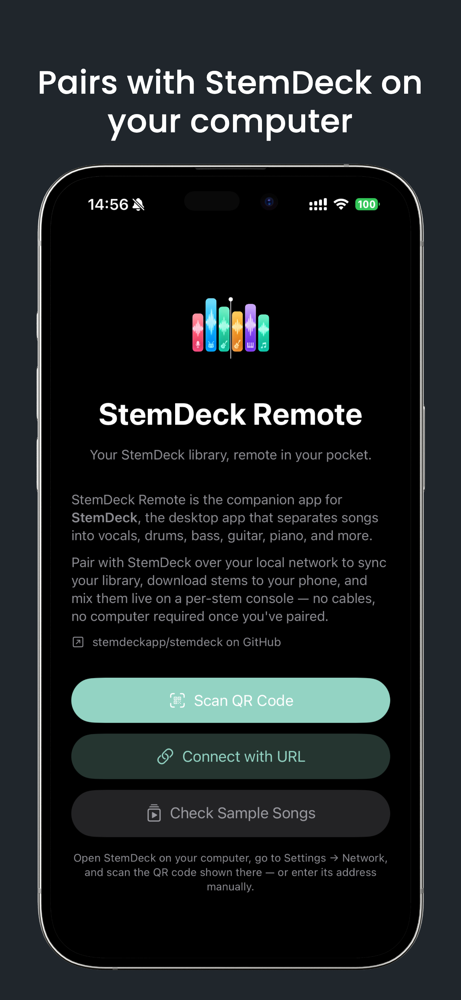
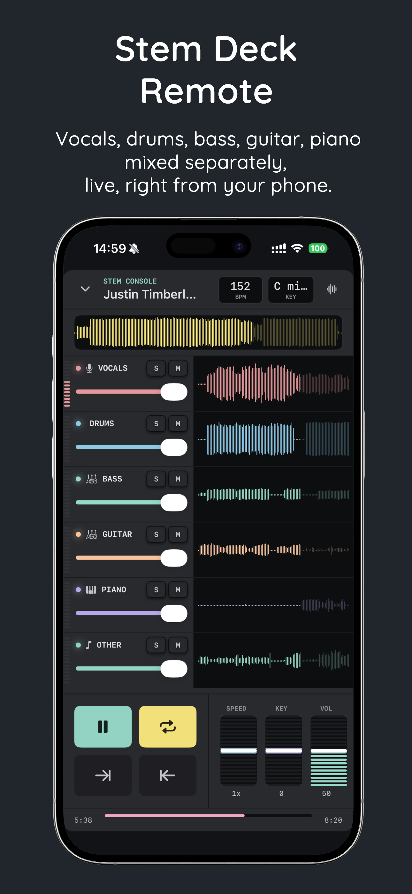
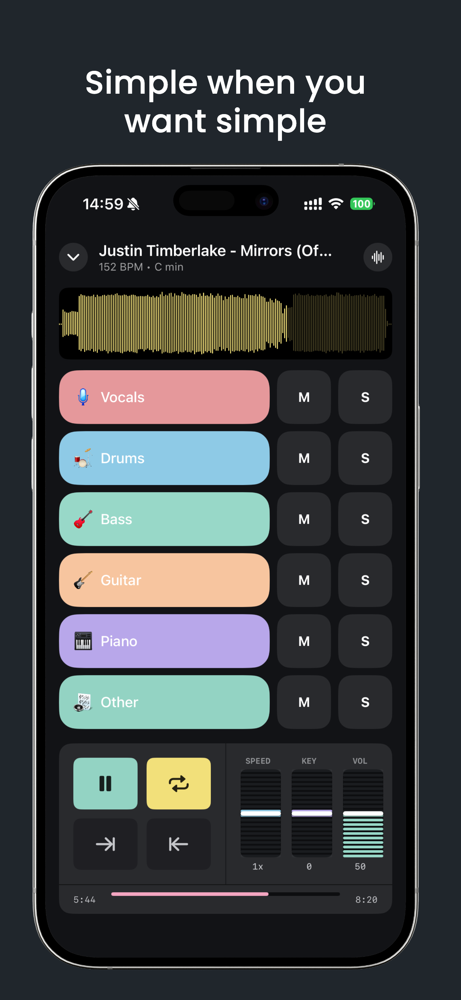
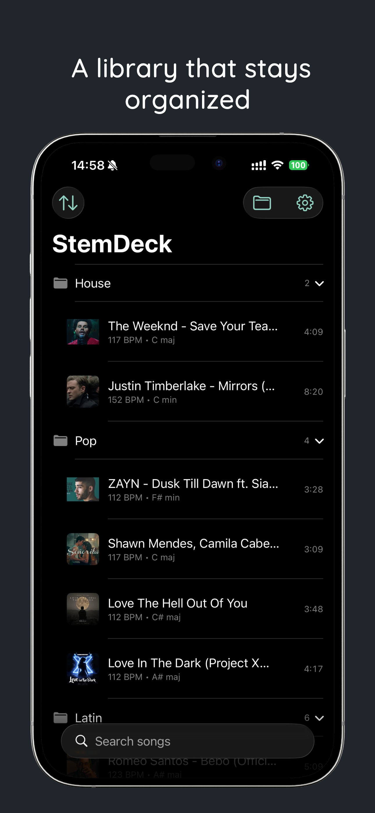

StemDeck Remote
Your StemDeck library, remote in your pocket.
What it is
StemDeck Remote is the native iOS and Android companion to StemDeck, the desktop app that separates songs into vocals, drums, bass, guitar, piano, and more. Pair with StemDeck over your local network to sync your library, download stems to your phone, and mix them live on a per-stem console — no cables, no computer required once you've paired.
Get the app
Screenshots




Highlights
- QR or manual pairing over your local Wi-Fi network, no account or cloud service involved
- Background stem downloads so songs are ready to play the moment you tap them
- Per-stem mixing with independent volume/mute/solo, plus shared speed and pitch control
- A Simple waveform-and-fader view and a full Advanced hardware-console view
- Client-side folders and a local Trash — organizing your library never touches StemDeck itself
- Background playback with lock-screen / notification transport controls